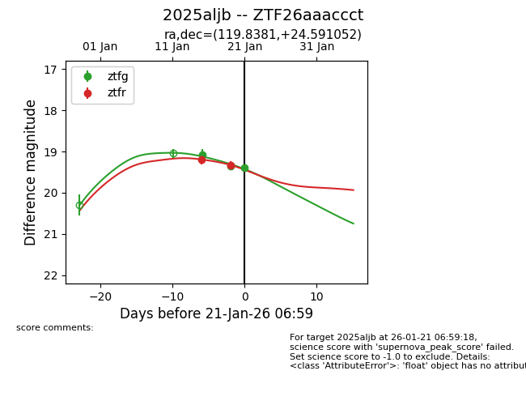
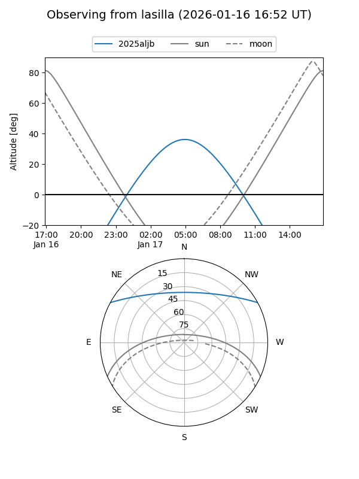
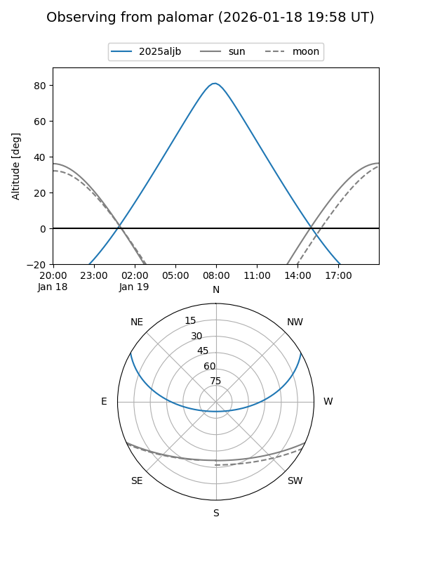
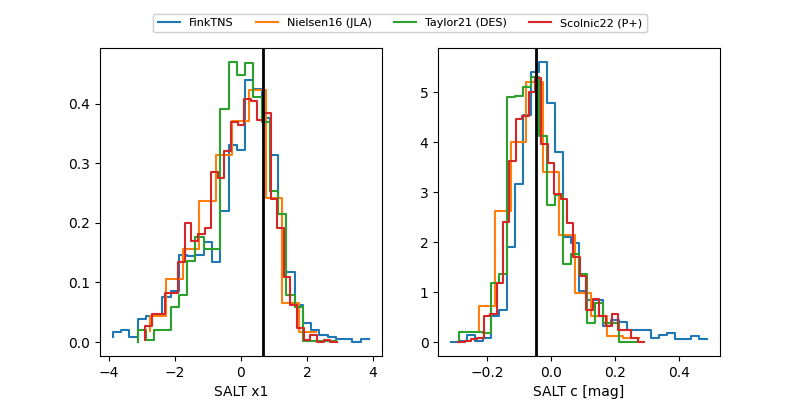

2025aljb
Target 2025aljb at 2026-01-15 12:15
Aliases and brokers:
FINK: link
Lasair: link
ALeRCE: link
TNS: link
YSE: link
alt names
ZTF26aaaccct (ztf,fink_ztf)
2025aljb (tns,yse)
Coordinates:
equatorial (ra, dec) = 119.8381,+24.59105
equatorial (HMS+DMS) = 07:59:21.14,+24:35:27.79
galactic (l, b) = (196.9375,+25.21842)
Flags:
Photometry:
last ztfg=19.07, ztfr=19.19
1 ztfg, 1 ztfr detections
Lightcurve

Visibility


Additional plots
